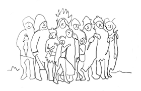
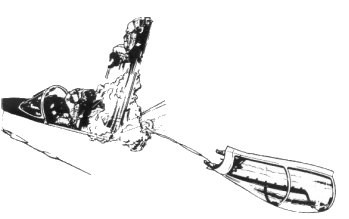
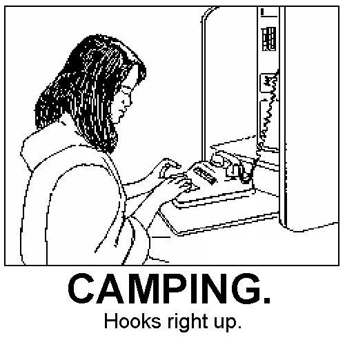

Camping's Youthfulness Wins Annual Award #
Today, the International Kayak Consortium celebrates Camping (a Microframework)’s 1st birthday. They have honored the paragraph of code by awarding it the Annual First Place in Birthdaying Special Day Award and So Brave.
{kind=link}
The commissioner of kayaking LeBrock Mitchell gave an acceptance speech on behalf of Camping at this morning’s banquet. His sentiments were brief, but stirring:
I have written two speeches for today, a long one and a short one. However, the pages for both got wet inside my kayak. Yes, I tried blow-drying them. But as I held that that cylinder of hot air, I realize that I couldn’t say anything as brief as Camping itself.
And he held up a printout of Camping from trunk and he wept exactly 4k of tears. We, in fact, measured with a graduated cylinder.
Here is Camping today.
%w[active_support markaby tempfile uri].map{|l|require l}
module Camping;Apps=[];C=self;S=IO.read(__FILE__).sub(/S=I.+$/,'')
P="Cam\ping Problem!";module Helpers;def R(c,*g);p,h=/\(.+?\)/,g.grep(Hash)
(g-=h).inject(c.urls.find{|x|x.scan(p).size==g.size}.dup){|s,a|s.sub p,C.
escape((a[a.class.primary_key]rescue a))}+(h.any?? "?"+h[0].map{|x|x.map{|z|C.
escape z}*"="}*"&": "")end;def URL c='/',*a;c=R(c,*a)if c.respond_to?:urls
c=self/c;c="//"+@env.HTTP_HOST+c if c[/^\//];URI(c)end;def/p;p[/^\//]?@root+p :
p end;def errors_for o;ul.errors{o.errors.each_full{|x|li x}}if o.errors.any?end
end;module Base;include Helpers;attr_accessor:input,:cookies,:env,:headers,:body,
:status,:root;def method_missing*a,&b;a.shift if a[0]==:render;m=Mab.new {},self
s=m.capture{send(*a,&b)};s=m.capture{send(:layout){s}} if /^_/!~a[0].to_s and m.
respond_to?:layout;s end;def r s,b,h={};@status=s;@headers.merge!h;@body=b end
def redirect*a;r 302,'','Location'=>URL(*a)end;Z="\r\n";def to_a;[@status,@body,
@headers]end;def initialize r,e,m;e=H[e.to_hash];@status,@method,@env,@headers,
@root=200,m.downcase,e,{'Content-Type'=>"text/html"},e.SCRIPT_NAME.sub(/\/$/,'')
@k=C.kp e.HTTP_COOKIE;q=C.qsp e.QUERY_STRING;@in=r;if%r|\Amultipart/form-.*boun\
dary=\"?([^\";,]+)|n.match e.CONTENT_TYPE;b=/(?:\r?\n|\A)#{Regexp::quote("--#$1"
)}(?:--)?\r$/;until@in.eof?;fh=H[];for l in@in;case l;when Z;break
when/^Content-D.+?: form-data;/;fh.u H[*$'.scan(/(?:\s(\w+)="([^"]+)")/).flatten]
when/^Content-Type: (.+?)(\r$|\Z)/m;fh[:type]=$1;end;end;fn=fh[:name];o=if
fh[:filename];o=fh[:tempfile]=Tempfile.new(:C);o.binmode;else;fh=""end;while l=@in.
read(16384);if l=~b;o<<$`.chomp;@in.seek(-$'.size,IO::SEEK_CUR);break;end;o<<l
end;C.qsp(fn,'&;',fh,q) if fn;fh[:tempfile].rewind if fh.is_a?H;end;elsif@method==
"post";q.u C.qsp(@in.read)end;@cookies,@input=@k.dup,q.dup end;def service*a
@body=send(@method,*a)if respond_to?@method;@headers["Set-Cookie"]=@cookies.map{
|k,v|"#{k}=#{C.escape(v)}; path=#{self/'/'}"if v!=@k[k]}-[nil];self end;def to_s
a=[];@headers.map{|k,v|[*v].map{|x|a<<"#{k}: #{x}"}};"Status: #{@status}#{Z+a*Z+
Z*2+@body}"end;end;X=module Controllers;@r=[];class<<self;def r;@r;end;def R*u
r=@r;Class.new{meta_def(:urls){u};meta_def(:inherited){|x|r<<x}}end;def M;def M
end;constants.map{|c|k=const_get(c);k.send:include,C,Base,Models;r[0,0]=k if
!r.include?k;k.meta_def(:urls){["/#{c.downcase}"]}if !k.respond_to?:urls}end;def
D p;r.map{|k|k.urls.map{|x|return k,$~[1..-1]if p=~/^#{x}\/?$/}};[NotFound,[p]]end
end;class NotFound<R();def get p;r(404,Mab.new{h1 P;h2 p+" not found"})end end
class ServerError<R();def get k,m,e;r(500,Mab.new{h1 P;h2"#{k}.#{m}";h3"#{e.class
} #{e.message}:";ul{e.backtrace.each{|bt|li(bt)}}}.to_s)end end;self;end;class<<
self;def goes m;eval S.gsub(/Camping/,m.to_s).gsub("A\pps=[]","Cam\ping::Apps<<\
self"),TOPLEVEL_BINDING;end;def escape s;s.to_s.gsub(/[^ \w.-]+/n){'%'+($&.
unpack('H2'*$&.size)*'%').upcase}.tr(' ','+')end;def un s;s.tr('+',' ').gsub(
/%([\da-f]{2})/in){[$1].pack('H*')}end;def qsp q,d='&;',y=nil,z=H[];m=proc{|_,o,n|o.u(
n,&m)rescue([*o]<<n)};q.to_s.split(/[#{d}] */n).inject((b,z=z,H[])[0]){|h,p|k,v=un(p).
split('=',2);h.u k.split(/[\]\[]+/).reverse.inject(y||v){|x,i|H[i,x]},&m}end;def
kp s;c=qsp(s,';,')end;def run r=$stdin,e=ENV;X.M;k,a=X.D un("/#{e[
'PATH_INFO']}".gsub(/\/+/,'/'));k.new(r,e,(m=e['REQUEST_METHOD']||"GET")).Y.
service *a;rescue Object=>x;X::ServerError.new(r,e,'get').service(k,m,x)end
def method_missing m,c,*a;X.M;k=X.const_get(c).new(StringIO.new,H['HTTP_HOST',
'','SCRIPT_NAME','','HTTP_COOKIE',''],m.to_s);H.new(a.pop).each{|e,f|k.send(
"#{e}=",f)}if Hash===a[-1];k.service *a;end;end;module Views;include X,Helpers
end;module Models;autoload:Base,'camping/db';def Y;self;end;end;class Mab<
Markaby::Builder;include Views;def tag!*g,&b;h=g[-1];[:href,:action,:src].map{
|a|(h[a]=self/h[a])rescue 0};super end end;H=HashWithIndifferentAccess;class H
def method_missing m,*a;m.to_s=~/=$/?self[$`]=a[0]:a==[]?self[m]:raise(
NoMethodError,"#{m}")end;alias_method:u,:regular_update;end end
More recently:
- Dream Ledger, a campsite for journaling yr sleep time.
- An introduction to Camping by Eric Mill.
- Feedchamp, an rss aggregator in Camping.
Update: If all of you can get out your copy of the Camping core team’s group picture, Indian Chief Skittles McQueeny has just sent me the following legend:

- Ranger Jake (holding a lizard)
- Tiffany Rabbitsapple
- (a non-notable prince)
- why the lucky stiff
- Spud Webb (the same)
- Indian Chief Skittles McQueeny
- Mrs. Rummly
- Jonas Pfenniger
- Oarsman C. S. “Celery Shirt” Acornson
- Camera Nap
- Helps the Janitor (holding a soccer ball under his poncho)
Update from Air Force Staff Sargeant Guds Mandragon:

We try to keep a lid on it, but some pilot folklore has infiltrated our ranks. The tale goes that if you eject from your plane on Camping’s birthday that you will be visited in the night by a red fairy who will grant you a free batch of caramel apples, answering to any quantity you provide. In some permutations of the rumor, she grants an infinite quantity. Four aircraft have been ditched, two have struck earth, one crushing a cereal factory. I am told Grape Nuts. Please dispell this rumor forthrighly.
Hmm, interesing stuff. Thanks, Guds!
Update: 
Update: The latest Camping trunk lets you add a query string to your routes by adding a Hash argument.
>> a "version 2", :href => R(Show, page.title, :version => 2) => "<a href='/wiki/title?version=2'>version 2</a>"
Eric Mill
Happy Birthday Camping!
LninYo
The lizard that shall remain unnamed!
Congratulations Why!! I wish you’d stop being so humble and start promoting this gem a bit more.
beppu
I think we should make you an honorary member of the Perl community. You’d fit right in with the rest of the mad scientists. ;-)
Scott
I have the same birthday as Camping (a Microframework). I find that comforting.
why
LninYo: Oh, I promote. Hooks right up!
Scott: Ever since you were young, a deerling walked in the adjacent hallways. Today that young buck stood upright. My fondest of happy birthdays to you.
Hal
Happy Birthday Camping! We use camping everyday for the lighting of the lava lamps.
I agree need to get your marketing mojo going. Perhaps camping needs it’s own myspace page.
Now where’s that cake…
tim
May it live long.
Why: looking back, you sent me an email about Markaby on the 3rd (Jan ‘06) with this little gem…
Heh heh :) Did you get my (more recent) email?
raspberry lemon
I’m baking a cake. Yum!
david g.
happy bday camping!!11elventyone
netghost
Hoorah for Camping, it’s a heck of a lot easier on the brain than TrailerPark (Scalable Enterprise Edition), which weighs in at a mere 4 gigs :)
topfunky
I’m still waiting for my Camping 2006 uniform to arrive in the mail.
defunkt
Life before Camping is a haze of pollution and natureless waste. I’ve never had so much fun with a pocket knife and a bag full of trail mix in my life.
roberthahn
woo! happy birthday to Camping! It rocks. hard.
MenTaLguY
Happy Birthday to Camping, and good job _why!
cdcarter
It’s amazing that one year ago I was thinking “WTF is this, why would anyone not want to use rails” and now I look rails the same way, and consider camping the better. What have you done _why, what have you done?
hhh
hey, thanks for the camping intro link (the only thing i’ve felt like missing a bit was a reference to http://prototypejs.org ). But, hooo, great work all around. Keep going and happy birthday Camping.
Eric Mill
I must say, I’ve found MooFX way better than Prototype for Camping. Super light, about as powerful, more compact syntax. It also originates at the best domain name in existence, mad4milk.net.
Skorgu
I less than three camping. Thanks for bringing Feedchamp to my attention, I’ve got some nifty-keen patches for it a brewin. And I would never have gotten beyond the “One day I should…” phase without 4k of outdoorsy-fresh delightfulness.
zem
Camping: The web framework for all in tents and purposes (:
happy birthday!
chd
Yet another Camping gem to know about is http://subtlety.errtheblog.com. Yes, now you can RSSin your SVN , http://swik.net/Rails/Err+the+Blog/RSSin%27+Your+SVN/uwio Cool, isn’t it?
Julik
I know you will hate me but I had to do this
http://julik.textdriven.com/svn/tools/rails_plugins/camper/lib/camper.rb
Might as well be a birthday present for Camping (although sort of a bondagy-one at that).